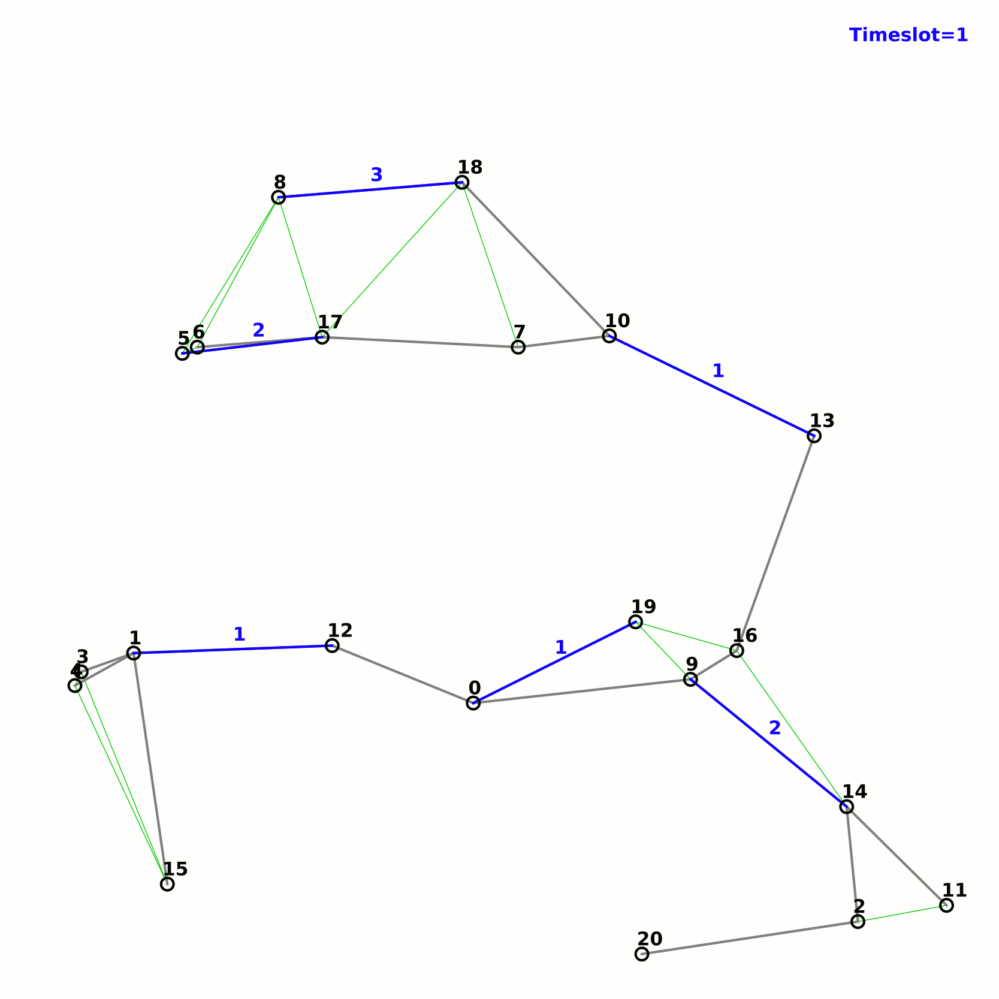
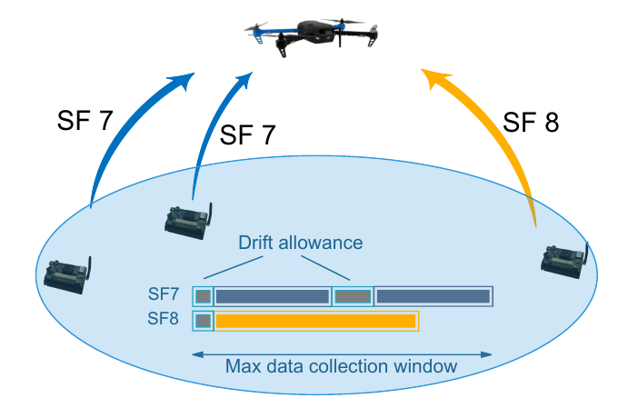

I fleet of devices with monitoring capabilities is used to cover specific points of interest. Since the devices have limited power resources, power-efficient algorithms are used to organise the nodes in groups such that only one group is active at any time. This method can extend the network lifetime.
A snapshot of targets (red circles), sensors (dots) and a base station (left side)
Different groups of nodes are used to cover a set of targers.
The controlled mobility of mobile routers is exploited to help a base network with connectivity problems to provide a better service. The base network may be any access network or metropolitan network (including wired and wireless technologies). The connectivity problems may happen due to an increased unplanned traffic, a failure of the equipment, or a power outage. Mobile routers evaluate the quality of the links using a variety of measurements and they move accordingly. Adaptive local decision making algorithms have been developed on real robots leading to a proof of concept.
An experiment with 2 wired stations and a mobile router (right click to play).
An instance of an experiment where the destination location must be discovered (paper)
Drone coordination
Drones are used to monitor and follow mobile targets (events) without a priori knowledge of their movement or destination. Since the drones consume a lot of energy a cost-efficient strategy is required. The drones communicate with each other to reduce energy consumption or to minimise the number of active drones.
Minimisation of the number of drones while covering static events.
Minimisation of the total energy cost while covering static events.
Drones are used to cover a number of mobile events. The drones are capable of alternating their altitude.
We model an IoT network consisting of nodes with RF-power harvesting capabilities and dedicated chargers. The transmitted power, the harvesting efficiency, the packet data rate, the interference, the position of the transmitters and many other parameters are taken into account. Building upon this model, we find the minimum reimbursement time needed to cover the capital expenditures with decreased operating costs.
We develop completely decentralized scheduling algorithms for IEEE 802.15.4 TSCH networks in order to improve reliability (PDR) and delay.
Example with 20 nodes:

LoRa(WAN)
The research involves the development of algorithms to schedule LoRa transmissions or assign spreading factors, slots, and frames. The algorithms such as the one presented in GIIS2018 allow parallel transmissions among nodes with different Spreading Factor configurations, while transmissions with the same configuration are scheduled at different time periods.
In this way, we can get data from multiple nodes within the shortest amount of time while avoiding collisions. We intend to use this technique for data collection with drones.
On the other hand, TS-LoRa is an autonomous scheduling algorithm to achieve time-slotted communications.
